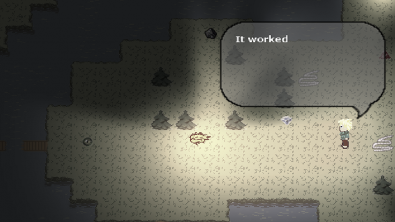

A 2D puzzle plattformer about light, colors and suicide
WebGLWindows/LinuxSource 6 month (part-time) 2 programmers, 3 artists Lead programmer and game designer
A 2D puzzle plattformer in which the player can transform into a beam of light to reflect off of surfaces an reach the end of the level as fast as possible.
Features:
2.5D forward renderer (2D sprites in 3D scene)
OpenGL, SDL and C++ based engine written from scratch
easy to use level editor
Smart-Textures for terrain
Online highscore list
GPU based Pixel-perfect soft shadows
The Last Summoner

A top-down puzzle game developed during the Global Game Jam 2016
A 3D dungeon crawler developed during a 7 day game jam.
- 7 days TODO Gameplay programmer (including level generation) and renderer optimization
A very simple 3D dungeon crawler heavily inspired by games like Diablo.
Features:
3D engine based on a previous game jam
Prozedural level generation
Swarm based enemy AI
Dynamicaly generated 3D tiles (combined from several building blocks)
Skeletal animations
Defered renderer
Varriance soft shadow mapping
Magnum Opus
A 2D top-down twin-stick shooter
TODOTODO 6 month (part-time) 2 programmers Lead programmer and game designer
A 2D twin-stick shooter in which the player has to collect a number of raw elements (fire, water, stone, ...) and combine them for stronger attacks.
Features:
Complex combat system
OpenGL, SDL and C++ based 2D engine written from scratch
Online highscore list
Prozedural level generation
Stackt Racer
A 3D racing game developed during a 7 day game jam.
Download: TODO Timeframe: 7 days Teamsize: TODO My role: Gameplay programmer
A 3D racing game for 1-4 players. The game features a simple steering system, items, bezier-curve based track-layouts and a 3D engine that has been written from scratch using C++, SDL and OpenGL during the game jam.